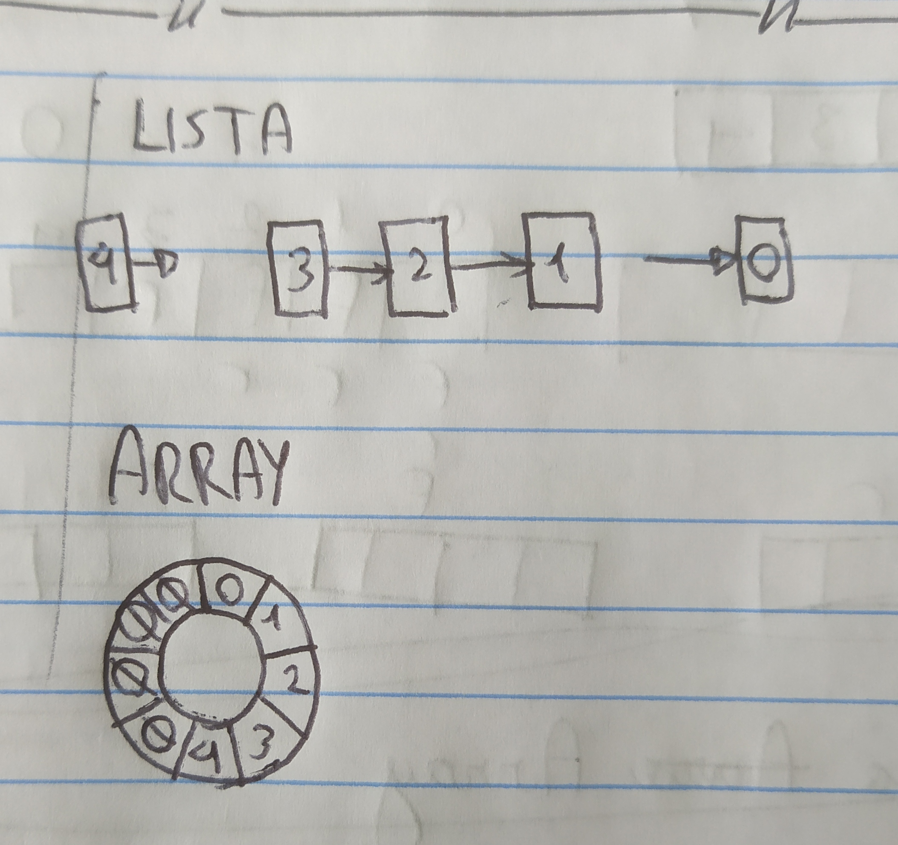

Filas e Pilhas
O que são filas e pilhas?
Estrutura de coleção de dados que permitem acesso a apenas um elemento de cada vez. No entanto a formaque o elemento é acessado é diferente em cada uma.
Filas seguem um algoritmo FIFO (first in first out), onde o primeiro elemento adicionado é sempre o primeiro a ser acessado, já as pilhas utilizam o algorítmo LIFO (last in first out) onde o último elemento adicionado é sempre o primeiro a ser acessado.
Operações básicas em filas
- enQueue(): adiciona 1 elemento na fila
- deQueue(): remove 1 elemento da fila
- front(): acessa primeiro elemento da fila
- rear(): acessa último elemento da fila
Como filas são armazenadas na memória?
Normalmente utilizando listas, pois essas não tem limite de elementos.
Ocasionalmente utiliza-se arrays, nesse caso um algoritmo é usado para fazer o array ter índices circulares, infelizmente Portugol não tem os comandos para implementar o algoritmo de forma simples e didática, ele fica grande e complexo, ele pode ser verificado aqui caso tenha curiosidade.
Em um array normal, ao encher a fila e retirar um elemento não é possível adicionar outro, pois a última posição já foi utilizada. Já em um array circular, ao encher a fila e retirar um elemento, é possível adicionar um elemento no início, tornando a adição e remoção de elementos cíclica.
Quando a lista está vazia, o índice do primeiro e último elemento é -1, assim ao adicionar um elemento o índice é calculado para 0.
Exemplos de aplicação
- Ordenar dados enviados assincronicamente, vamos aprender sobre isso no javascript futuramente nesse bootcamp :)
- Lista de emails
- Filas em roteadores
Operações básicas com pilhas
- push(): adiciona 1 elemento no final da pilha
- pop(): remove 1 elemento do final da pilha
- peek(): acessa o último elemento da pilha
- isEmpty(): verifica se a pilha está vazia
Como pilhas são armazenadas na memória
Novamente utilizando listas, pois essas não tem limite de elementos. Podem ser implementadas usando Arrays também, nesse caso o algoritmo para tornar Array circular não é necessário.
Exemplos onde pilhas são utilizadas
- “Ctrl + z”
- Desfazer e refazer ações em programas
- Voltar página em navegadores